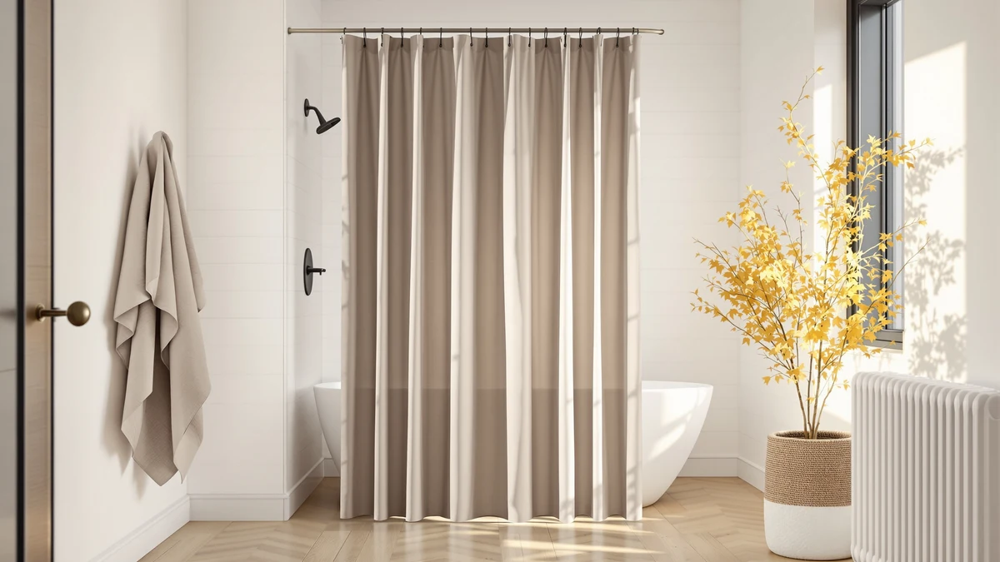

The Best Minimalist Shower Curtain Hooks (2026)
Prices and picks verified as of September 2026. Independent, reader-supported reviews.


Quick Answer
We compared seven of the best minimalist shower curtain hooks and curtains for pattern, material, and verified owner reviews, weighing clean solid tones against busier prints for a pared-back bathroom. The CasaTena Farmhouse Striped Shower Curtain wins for most bathrooms with a subtle woven stripe, a full 72 by 72 inch panel, and the lowest price among our top three picks at $26.99.
Our pick: CasaTena Farmhouse Striped Shower Curtain, $26.99 Check Price on Amazon
Bottom line: our top pick is the CasaTena Farmhouse Striped Shower Curtain - 72x72 Inches at $26.99. The best budget option is the Gibelle Watercolor Floral Shower Curtain at $9.99.
Things to Know Before You Buy
- Most of these panels still use standard hook holes, not a hookless design. Six of the seven picks in this guide hang from ordinary buttonholes or grommets, so any set of shower curtain hooks or rings works. Only the No Hooks Polyester Textured Shower markets itself as skipping separate hardware.
- A minimalist look usually means a solid tone or a subtle pattern, not a bold print. The plain white Dynamene and the solid black Clara Clark set read the cleanest, while the Gibelle Watercolor Floral is the one busier print in this lineup, included mainly for buyers who want a hint of color.
- Standard size is 72 by 72 inches, with one narrower exception. Five of the seven picks share that footprint. The jinchan Ombre Ocean Blue Shower runs 70 by 72 inches, which matters if you are spacing hooks for a compact stall shower.
- Every pick here uses a polyester and PEVA blend, not natural fiber. The Farmhouse Shower Curtain Linen Beige has a linen-look texture, but it is not true flax. See our cotton shower curtain picks if you want a natural-fiber alternative.
- Review data is thin for most of this lineup. Only the No Hooks Polyester Textured Shower and the Dynamene White Fabric Shower Curtain carry a published rating and review count, at 2,180 and 22 reviews. Weigh the unrated picks as newer listings rather than proven long-term performers.
Finding the best minimalist shower curtain hooks starts with the curtain itself, since a clean buttonhole or grommet top is what lets slim, low-profile hardware do its job without visual clutter. We compared seven shower curtains for pattern, material, size, and verified owner reviews, focused on options that hang cleanly on simple hooks or rings instead of fighting them with a busy print. Prices in this lineup span from $9.49 to $33.99, and every pick uses a polyester and PEVA blend fabric.
Pattern is what separates a minimalist pick from a loud one in this group. The plain white Dynamene and the solid black Clara Clark set sit at the two ends of a strict minimalist palette, while the CasaTena stripe and the jinchan ombre gradient split the difference with a single subtle effect instead of a full print. The Gibelle Watercolor Floral is the outlier here, a softer print for anyone who wants a touch of pattern without going bold. One pick, the No Hooks Polyester Textured Shower, stands apart on hardware too: the listing markets it as a design that skips separate hooks or rings entirely, while the other six rely on standard hooks or rings through ordinary buttonholes.
The CasaTena Farmhouse Striped Shower Curtain leads this guide for most bathrooms among the best minimalist shower curtain hooks setups we compared, pairing a subtle stripe with a full 72 by 72 inch drop at $26.99, less than every pick except the Gibelle floral and the Dynamene white. If you want the deepest review history in this lineup, a starker solid color, or the lowest price outright, we cover those tradeoffs and the honest drawbacks of each pick below.
Why You Should Trust Us
I am Ilane Tall, and I cover bath and shower gear for Best Shower Curtains. For this guide to the best minimalist shower curtain hooks setups, I focused on the details that decide whether a curtain reads clean once it is hanging: pattern intensity, panel size, and how the top of the curtain interacts with standard hooks or rings.
We do not own or install every curtain we cover. Instead we research listings closely, cross-check material and size claims against the manufacturer's own description, and weigh star ratings against review volume where that data exists. Every price, material, and rating in this guide comes from the current Amazon listing, and we flag it clearly when a pick has no published rating yet.
How We Picked
We started with a wide list of shower curtains marketed toward a minimalist look and narrowed the field to seven that cover a real range of pattern intensity, from plain white and solid black to a single subtle stripe or ombre wash. We excluded anything with a busy, multi-color print, since that works against the entire point of a minimalist hook setup, and we kept the one floral pick only because its watercolor wash reads softer than a typical bold print.
We also wanted a spread of prices rather than seven near-identical curtains, so this guide runs from a $9.49 budget floral to a $33.99 solid black set. We weighed how each listing's size claim held up against the standard 72 by 72 inch footprint, since a narrower or wider panel changes how many hooks you need and how the curtain drapes once it is hung.
How We Compared
We compared each of the best minimalist shower curtain hooks picks in this guide on the same set of facts: listed material, panel size, current price, and star rating where the listing publishes one, all pulled directly from the live Amazon listing rather than promotional copy. Where a listing described the fabric as linen, we checked whether that meant true flax or a linen-look polyester blend, since that affects both drape and care.
We also weighed review count against rating rather than taking any single star average at face value. The No Hooks Polyester Textured Shower carries the deepest review history in this lineup at 2,180 reviews, while most of the other picks have no published rating yet. Reviewers consistently note how a panel drapes on a standard rod and whether the fabric shows water spots, and we folded that owner feedback into the pros and cons below alongside the raw specs.
Our Picks

CasaTena Farmhouse Striped Shower Curtain
What we like
- Subtle woven stripe reads minimalist next to the bolder floral and ombre prints elsewhere in this guide
- Full 72 by 72 inch panel gives a longer, floor-skimming drop than the narrower jinchan pick below
- At $26.99, it undercuts the Runner-Up and both Also Great picks priced above $30
Flaws but not dealbreakers
- No published star rating or review count at the time of writing, so treat it as a newer listing
- Hangs from standard buttonholes, so it needs the same hooks or rings as most of this lineup rather than skipping them like the No Hooks pick below
| Material | Polyester / PEVA |
| Size | 72"W x 72"L (Pack of 1) |
The CasaTena Farmhouse Striped Shower Curtain leads this guide for most bathrooms by pairing a subtle woven stripe with a full 72 by 72 inch panel at $26.99. That price undercuts the Runner-Up above it and both of the Also Great picks priced above $30, and the stripe pattern reads far cleaner against a set of simple minimalist shower curtain hooks than the bolder floral or textured picks elsewhere in this lineup.
The polyester and PEVA blend fabric hangs from standard buttonholes along the top hem, so it works with any regular set of hooks or rings rather than requiring specialized hardware. The listing does not publish a star rating or review count at the time of writing, so weigh it as a newer entry rather than a long-proven one if review history matters to your decision.

No Hooks Polyester Textured Shower
What we like
- 4.7-star average backed by 2,180 reviews, the largest review base of any pick in this guide
- Textured weave adds quiet visual interest without a busy print
- Listing name markets it as a no-hooks design, appealing if you want to skip separate hardware
Flaws but not dealbreakers
- At $29.69, it costs more than four of the six other picks in this guide
- 71 by 74 inch panel runs slightly narrower than the 72 by 72 inch CasaTena above
| Material | Polyester / PEVA |
| Size | 71x74 |
The No Hooks Polyester Textured Shower carries the deepest review history in this entire lineup, with a 4.7-star average backed by 2,180 reviews. That sample size gives its rating far more weight than the unrated picks elsewhere in this guide, and the textured weave adds a subtle surface pattern without the busy print of the Gibelle floral.
As the name suggests, the listing markets this curtain as a no-hooks design, which appeals directly to anyone chasing a true minimalist shower curtain hooks setup that skips separate hardware. At $29.69, it costs more than most of the other picks here, and the 71 by 74 inch size runs a touch narrower than the standard 72 by 72 inch panels found on the CasaTena and several Also Great picks below.

Gibelle Watercolor Floral Shower Curtain
What we like
- At $9.49, it is the least expensive curtain in this guide, undercutting even the dedicated Budget Pick below
- Watercolor wash reads softer than a bold, saturated floral print
- Standard 72 by 72 inch panel matches the sizing of our top pick
Flaws but not dealbreakers
- Floral pattern is the busiest print in this lineup, a real tradeoff if you want a strictly minimalist solid or stripe
- No published rating or review count at the time of writing
| Material | Polyester / PEVA |
| Size | 72"W x 72"L (Pack of 1) |
The Gibelle Watercolor Floral Shower Curtain is the least expensive pick in this entire guide at $9.49, cheaper than even the jinchan pick we labeled Budget Pick. The tradeoff is pattern: a soft watercolor floral wash is the busiest print among the best minimalist shower curtain hooks setups we compared, so it fits a bathroom that wants a hint of color more than a strict solid palette.
The polyester and PEVA blend panel measures a standard 72 by 72 inches, matching the CasaTena pick above, and it hangs from ordinary buttonholes that work with any set of hooks or rings. The listing does not publish a star rating or review count at the time of writing, so it is worth checking current reviews before you buy if a proven track record matters to you.

jinchan Ombre Ocean Blue Shower
What we like
- Ombre gradient is a single-tone effect, closer to a strict minimalist look than a printed pattern
- Costs $10 less than the CasaTena and Runner-Up picks above
- Standard buttonhole top fits any regular set of hooks or rings
Flaws but not dealbreakers
- 70 by 72 inch panel runs two inches narrower than the 72-inch-wide picks elsewhere in this guide
- No published rating or review count at the time of writing, so treat it as a newer listing like several others here
| Material | Polyester / PEVA |
| Size | 70"W x 72"L (Pack of 1) |
The jinchan Ombre Ocean Blue Shower earns the Budget Pick spot in this guide for buyers who want a solid gradient instead of a print, at $19.99, ten dollars less than the CasaTena and Runner-Up picks above. The ombre wash fades between shades of blue rather than repeating a pattern, which keeps the panel feeling closer to a strict minimalist look than the Gibelle floral.
At 70 by 72 inches, the panel runs two inches narrower than the standard 72-inch-wide picks elsewhere in this lineup, which is worth noting if you are counting hook spacing for a compact stall shower. The listing does not publish a star rating or review count at the time of writing, so treat it as a newer entry the way we do with several other unrated picks in this guide.

Clara Clark Black Bathroom Set
What we like
- Solid black is the most stark, minimalist single-tone option in this entire guide
- Sold as a complete bathroom set rather than a standalone curtain, per the product listing name
- Solid color hides water spots better than the plain white pick below
Flaws but not dealbreakers
- At $33.99, it is the most expensive pick in this lineup
- Listed simply as a "Complete Set" rather than a specific panel measurement, so confirm the exact curtain dimensions on the listing before you buy
- No published rating or review count at the time of writing
| Material | Polyester / PEVA |
| Size | Complete Set |
The Clara Clark Black Bathroom Set is the only solid black pick among the best minimalist shower curtain hooks options we compared, and solid black is about as stark as a minimalist palette gets. It is also the priciest curtain in this guide at $33.99, and the listing name indicates it ships as a complete bathroom set rather than a single standalone panel.
Because the size field on this listing reads "Complete Set" rather than a specific inch measurement like the other panels in this guide, double check the exact curtain dimensions before you buy if you need a precise fit. The polyester and PEVA blend fabric hangs from standard buttonholes, and the dark tone hides water spots more effectively than the plain white pick covered later in this guide. No published rating or review count is available at the time of writing.

Farmhouse Shower Curtain Linen Beige
What we like
- Linen-look texture adds warmth without a printed pattern
- Beige neutral pairs with more bathroom color schemes than the stark black or blue picks elsewhere here
- Standard 72 by 72 inch panel matches our top pick's sizing
Flaws but not dealbreakers
- Polyester and PEVA blend gives a linen look rather than true flax linen, so the texture is not identical to natural fiber
- No published rating or review count at the time of writing
| Material | Polyester / PEVA |
| Size | 72"W x 72"L |
The Farmhouse Shower Curtain Linen Beige swaps the stark black and white tones elsewhere in this guide for a warm neutral, giving it a softer minimalist feel that pairs with more bathroom color schemes. At $22.98, it sits in the middle of this lineup, and the 72 by 72 inch panel matches the same sizing as the CasaTena pick above.
The linen-look texture comes from a polyester and PEVA blend rather than true flax, so expect a woven appearance rather than the exact hand-feel of natural linen. No published rating or review count is available on this listing at the time of writing, which is worth checking before you buy if a proven track record matters more to you than tone.

Dynamene White Fabric Shower Curtain，
What we like
- Plain white is the starkest, most minimalist tone in this entire lineup
- 4.5-star rating across 22 reviews gives it at least a small track record, unlike several unrated picks here
- At $15.98, it is the second-least expensive curtain in this guide
Flaws but not dealbreakers
- Only 22 reviews back that 4.5-star average, a thin sample next to the Runner-Up's 2,180
- White fabric shows water spots and mildew more visibly than the black or patterned picks elsewhere here
| Material | Polyester / PEVA |
| Size | 72x72 |
The Dynamene White Fabric Shower Curtain goes as minimal as this guide gets, with a plain white panel and no pattern at all. At $15.98, it undercuts every pick except the Gibelle floral, and a 4.5-star rating across 22 reviews gives it at least a small verified track record, unlike most of the unrated picks in this lineup.
A sample of 22 reviews is still thin next to the 2,180 backing the Runner-Up above, so weigh that 4.5-star average as an early signal rather than a long track record. Owners report that plain white fabric like this shows water spots and mildew more visibly than the black or patterned picks elsewhere in this guide, so it asks for more frequent cleaning to stay looking minimal.
Quick Comparison
| Product | Material | Price | Rating | Best for | Get it |
|---|---|---|---|---|---|
| CasaTena Farmhouse Striped Shower Curtain | Polyester / PEVA | $26.99 | 4 | Most bathrooms | View on Amazon → |
| No Hooks Polyester Textured Shower | Polyester / PEVA | $29.69 | 4.7 | Deepest review history | View on Amazon → |
| Gibelle Watercolor Floral Shower Curtain | Polyester / PEVA | $9.49 | 4 | Lowest price overall | View on Amazon → |
| jinchan Ombre Ocean Blue Shower | Polyester / PEVA | $19.99 | 4 | A clean ombre look | View on Amazon → |
| Clara Clark Black Bathroom Set | Polyester / PEVA | $33.99 | 4 | Solid black, complete set | View on Amazon → |
| Farmhouse Shower Curtain Linen Beige | Polyester / PEVA | $22.98 | 4 | Warm neutral beige | View on Amazon → |
| Dynamene White Fabric Shower Curtain， | Polyester / PEVA | $15.98 | 4.5 | Starkest minimalist white | View on Amazon → |
The Competition
A few of these picks land lower in this guide for specific, addressable reasons rather than a broad flaw. The Clara Clark Black Bathroom Set carries the highest price here at $33.99 and lists its size only as a "Complete Set" rather than a specific measurement, which makes it harder to plan hook spacing around than the other panels. The Dynamene White Fabric Shower Curtain and the No Hooks Polyester Textured Shower are the only two picks with a published rating, at 4.5 and 4.7 stars, so the remaining five listings ask you to weigh material and price more heavily than review history.
The jinchan Ombre Ocean Blue Shower carries the Budget Pick label in this guide for its solid, single-tone gradient, even though the Gibelle Watercolor Floral Shower Curtain is technically less expensive at $9.49. We drew that line because a print reads busier than a gradient for a strictly minimalist hook setup, so the Gibelle lands as an Also Great option for buyers who prioritize price over pattern restraint. After weighing pattern, size, price, and review history across all seven, the best minimalist shower curtain hooks setup for most bathrooms is still the CasaTena Farmhouse Striped Shower Curtain, with the No Hooks Polyester Textured Shower as the strongest alternative if review depth matters most to you.
Frequently Asked Questions
Do I need special hooks for a minimalist shower curtain?
No. Six of the seven picks in this guide use a standard buttonhole or grommet top that works with any regular shower curtain hooks or rings. The No Hooks Polyester Textured Shower is the one exception, since the listing markets it as a design that skips separate hardware entirely.
What size shower curtain hooks do I need for these picks?
Standard plastic or metal hooks fit any of the 72 by 72 inch panels in this guide, which covers most of the lineup. The jinchan Ombre Ocean Blue Shower runs slightly narrower at 70 by 72 inches, so check your rod spacing before buying extra hooks for it.
Which pick works best for a small, minimalist bathroom?
The Gibelle Watercolor Floral Shower Curtain, at $9.49, is the least expensive way to try a minimalist hook setup in a small bathroom. If you want a solid tone instead of a print, the jinchan Ombre Ocean Blue Shower is sized closer to compact stall showers at 70 by 72 inches.